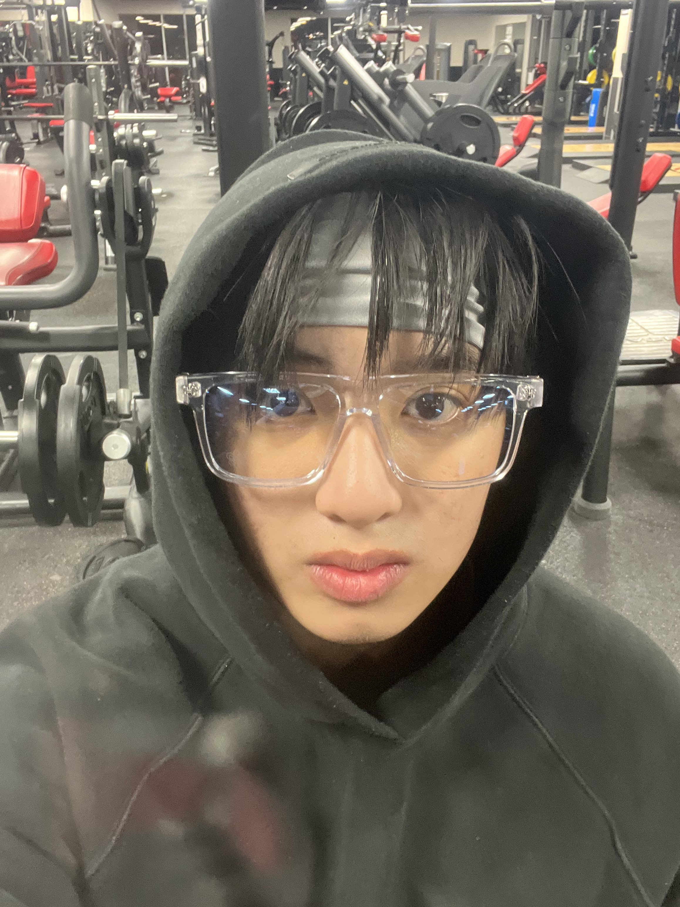

Tyler Nguyen

Summary
My name is Tyler Nguyen, I'm currently a freshman at the University of Houston!
Education
- Bachelor of Business Adminastration in Management Information Systems - University of Houston (2023-2027)
Work Experience
Cross Serve Governance & Execution Intern - NRG Energy
June 2024 - August 2024
- Contribute to the visibility and transparency of Cross-Serve performance metrics across brands, regions, and products
- Assist in deploying brand and channel-specific execution plans, ensuring alignment with overall cross-serve strategy
- Participated in the Stage Gate Process, aiding the transition of products from concept development to market launch
Founder & CEO - Overtucked
October 2022 - Present
- Pioneer a dynamic shoe company with from inception to full scale operation, ensuring optimal production processes
- Drive strategic product development and identifying market positioning resulting in 500+ clients and 10 partnerships
- Establish and nurture strategic partnerships with suppliers, expanding market reach and surpass initial goal of $42,000
Skills
- Microsoft Office Suites: ⭐️⭐️⭐️⭐️⭐️
- HTML:⭐️
Awards & Certifications
- Dean's Distinguised List
- CodePath Intro to Web Development
Other